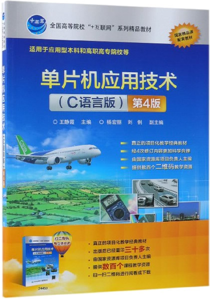

首页 > 书籍下载
《单片机应用技术(C语言版)》第4版PDF下载（高清完整版）
|  | 作者：王静霞 |
| 出版时间：2021年11月01日 | |
| 出版社：电子工业出版社 | |
| 书号ISBN：9787121244537 | |
| 总页数：213 | |
| 总字数：49.9W |
这是一本 C 语言版的单片机入门书籍，已经迭代了 4 个版本。全书从实战项目出现，让读者通过做项目掌握单片机的各个知识点，非常适合有 C 语言基础、对单片机感兴趣的读者。
这里提供的是《单片机应用技术(C语言版)》第 4 版的高清 PDF 下载，内容完整，附带目录标签。
和其它同类的单片机书籍相比，这本书最大的特点是注重实践。全书带领读者一边做项目一边学习知识点，从点亮一个 LED 发光二极管开始，由简到难，比如制作流水灯，声光报警器、可调光台灯、8 路抢答器、简易的秒表、数字钟、温度监测记录系统、家居照明蓝牙控制系统等，最终入门单片机开发。
下面是一位购买了这本书的读者给出的评价：
王老师的书 在慕课上学习视频资料后来买的，很实用，项目式学习。
另一位读者也给出了好评：书的内容很好，配套的东西例子也很好，适合初学者。
书籍目录
- 项目1 熟悉单片机操作环境
- 1.1 认识单片机
- 1.2 学习单片机的准备
- 项目2 学习单片机硬件系统
- 2.1 8051的信号引脚
- 2.2 单片机最小系统电路
- 2.3 51单片机的存储器结构
- 2.4 单片机并行I/O端口
- 项目3 单片机并行I/O端口的应用
- 3.1 认识C语言
- 3.2 C语言的基本语句
- 3.3 C语言数据与运算
- 3.4 C语言的函数
- 项目4 显示和键盘接口技术应用
- 4.1 认识LED数码管
- 4.2 数组的概念
- 4.3 LED数码管动态显示
- 4.4 LED大屏幕显示器及接口
- 4.5 字符型LCD液晶显示及接口
- 4.6 单片机与矩阵键盘接口
- 项目5 定时与中断系统设计
- 5.1 定时/计数器
- 5.2 中断系统
- 项目6 串行通信技术应用
- 6.1 串行通信基础
- 6.2 51单片机的串行接口
- 6.3 51单片机串行口工作过程
- 6.4 串行通信协议
- 6.5 串行口的I/O端口扩展
- 项目7 A/D与D/A转换接口设计
- 7.1 模拟信号与数字信号
- 7.2 单片机内部ADC及其应用
- 7.3 I2C总线A/D与D/A转换器PCF8591
- 项目8 单片机应用系统综合设计
- 8.1 数字钟的设计与制作
- 8.2 图形液晶显示系统设计
- 8.3 单片机温度检测记录系统设计
- 8.4 家居照明蓝牙控制系统的设计
- 8.5 WIFI遥控小车设计
- 附录
- 附录A 课程设计的步骤
- 附录B 常用的C51标准库函数
书籍下载
一键登录，免费下载完整版 PDF，文件名称：《单片机应用技术(C语言版)》第4版.pdf